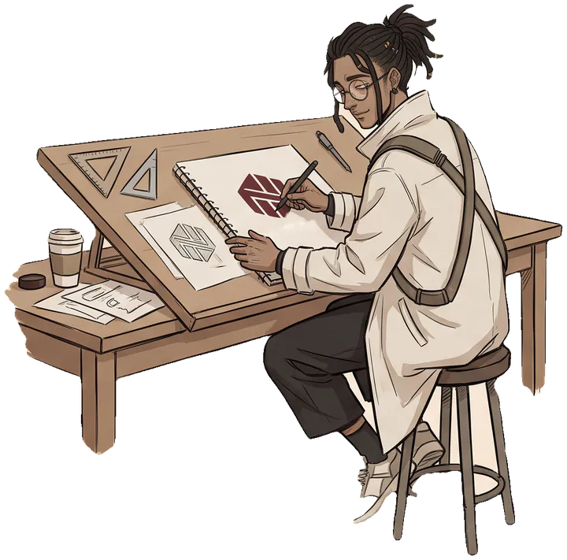
Artist · Designer · Developer
br4vetr4veler
Hamisse Mohamed Yasser
form is a function of obsession.
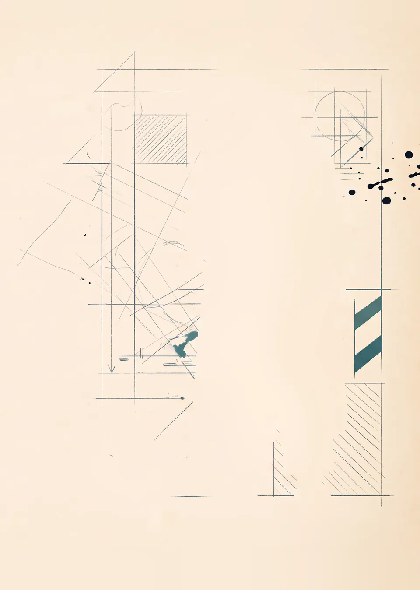
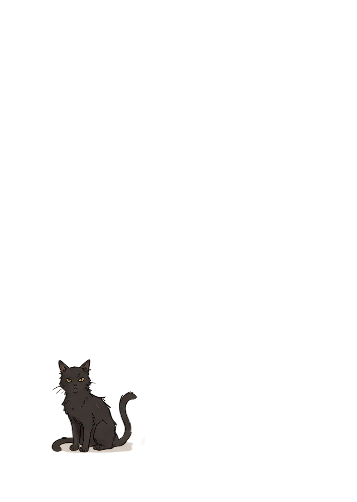
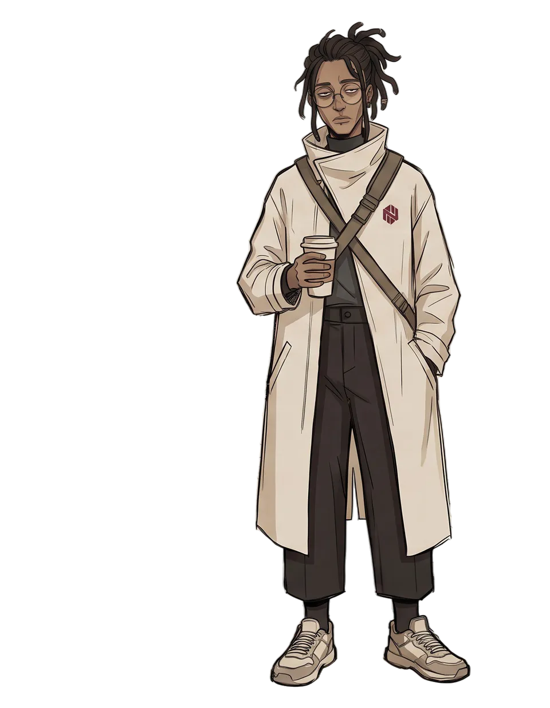
What I make
Design meets code.
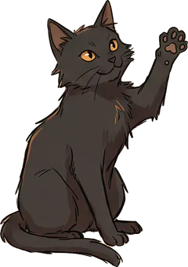
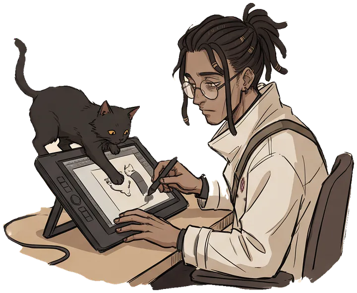
Identity. Posters. Print.
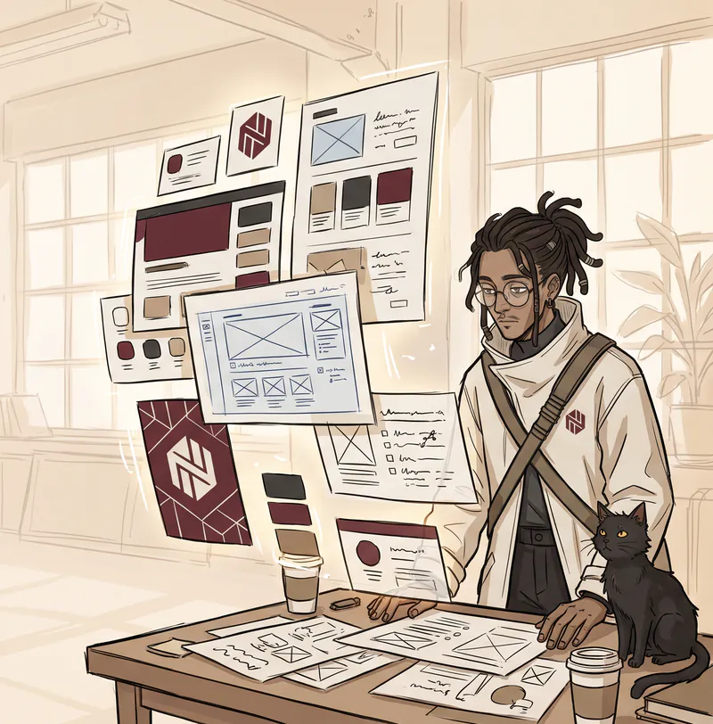
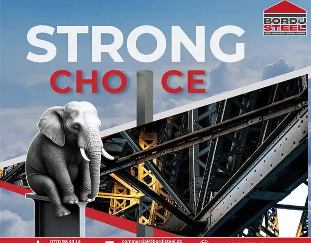
Bordj Steel Branding Project- Heetch Entry Test
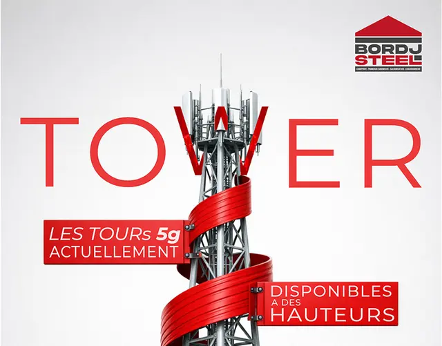
Minimal Industrial Social Media Creatives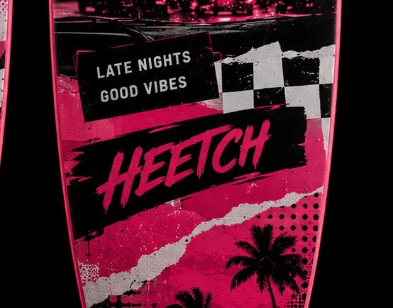
Surfboard Design for Beach POSM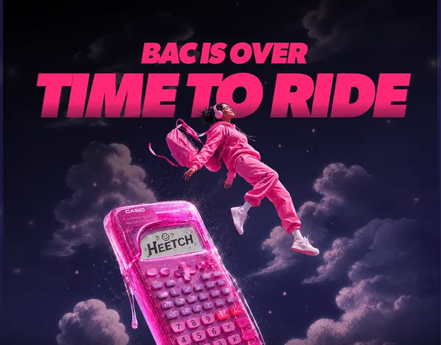
Summer. Creative. Social Media- Amanatcom Brand Guidelines
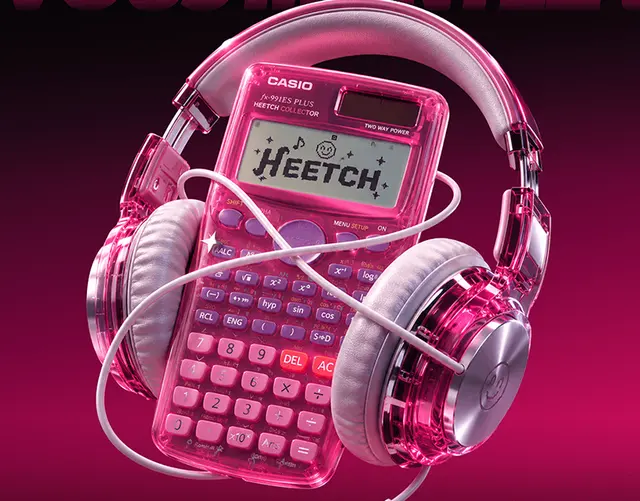
First Month At Heetch. Dz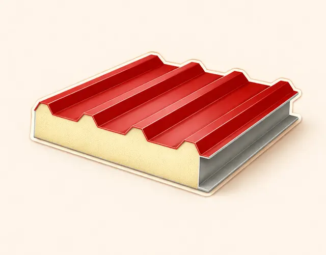
Sandwich Insulating Panels Graphic Assets- Billboard Urbain Bordj Steel SPA
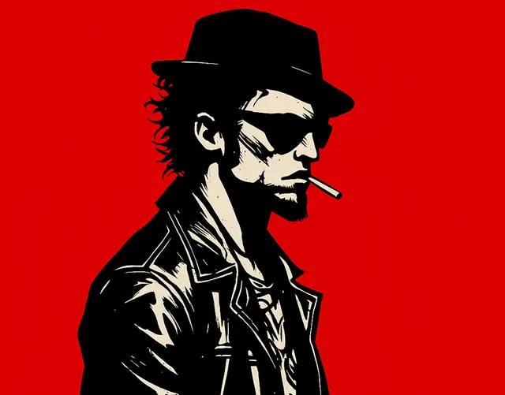
Tyler Durden Halftone Poster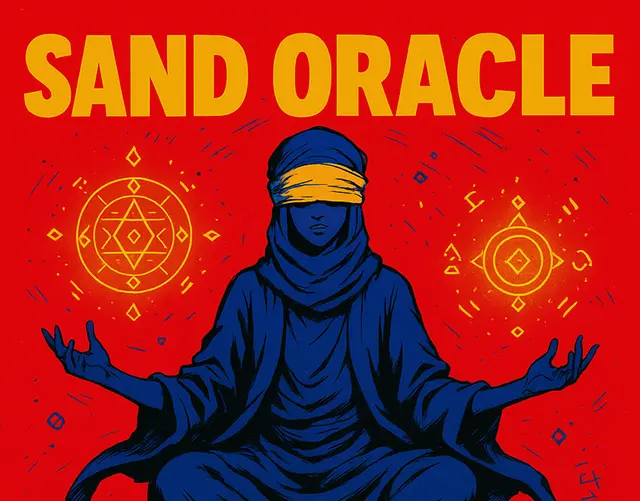
Star Born Algerian Series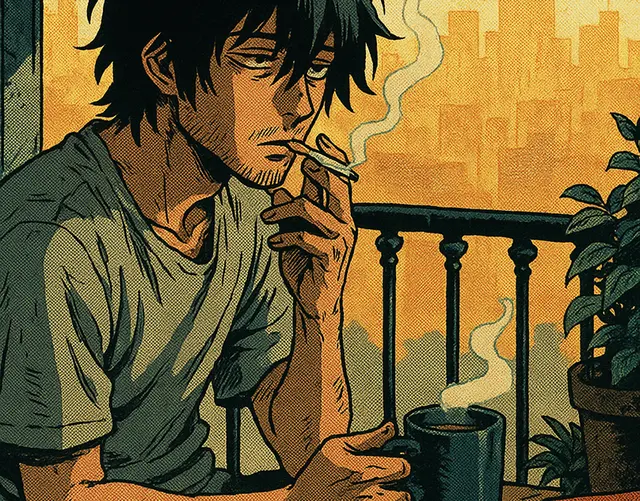
Alan Is Awake Manga Concept
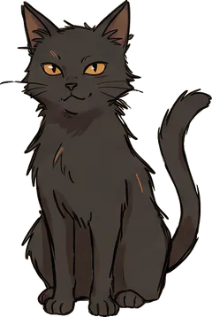
Studio diary
Yasser and Kūro, after hours.
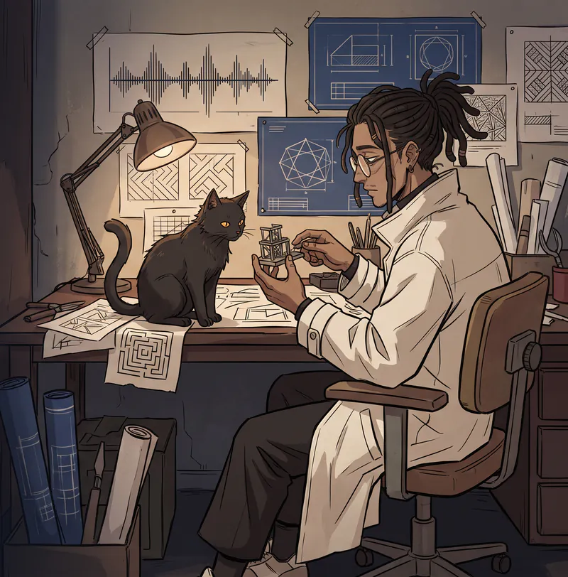


Elsewhere
One handle. Every world.
Design, code, and everything between.
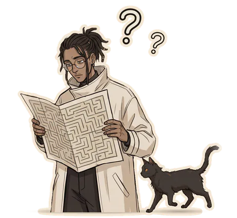